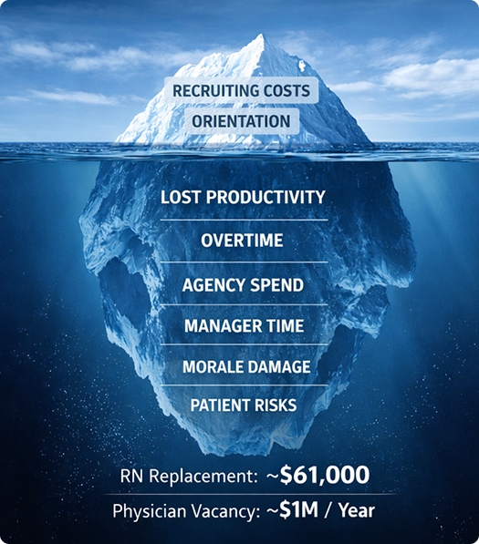

<section class="wyt-section">
  <div class="wyt-container">

    <!-- Left: Text Content -->
    <div class="wyt-left">
      <h2 class="wyt-heading">
        Who on your team would you miss the most if they resigned today?
      </h2>

      <div class="wyt-body">
        <p class="wyt-lead">
          And what would that kind of loss cost your organization?
        </p>

        <p class="wyt-text">
          The average cost to replace a single registered nurse is $61,000, and a typical hospital can spend as much as $4.3 million annually on nurse recruitment.
        </p>

        <p class="wyt-text">
          When a leader leaves, the stakes are even higher. It's lost experience, institutional knowledge, and the daily momentum that drives your teams forward.
        </p>

        <p class="wyt-text">
          Every resignation leaves a gap. Every gap creates risk. And in today's high-pressure healthcare environment, those risks can quietly grow, impacting patient outcomes, team engagement, and organizational performance.
        </p>
      </div>
    </div>

    <!-- Right: Iceberg Image -->
    <div class="wyt-right">
      <div class="wyt-image-wrapper">
        
      </div>
    </div>

  </div>
</section>